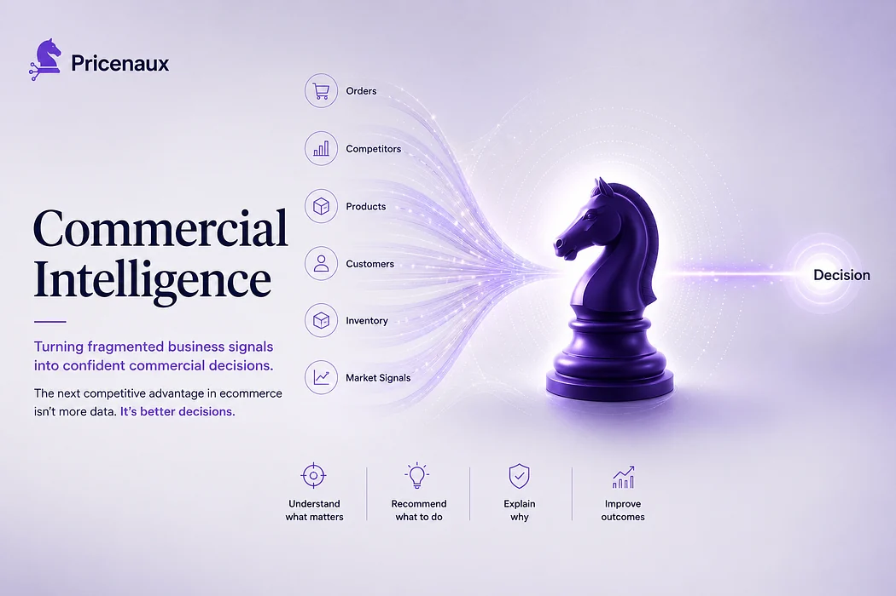
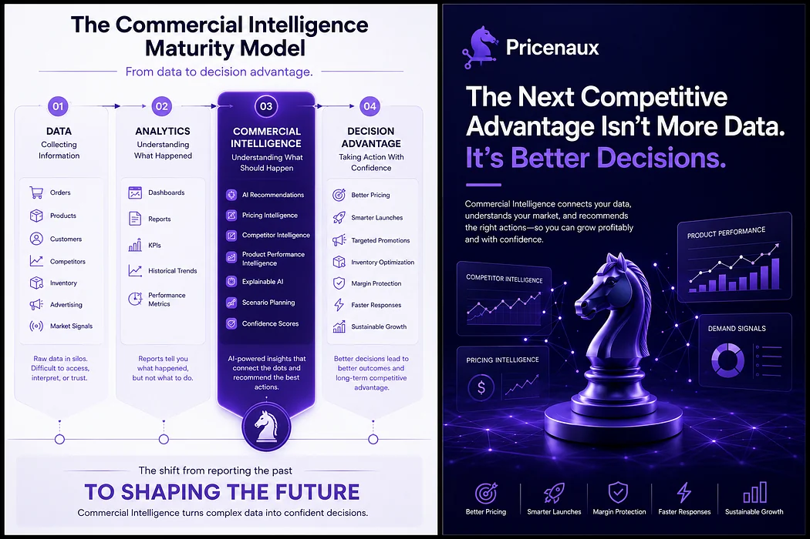
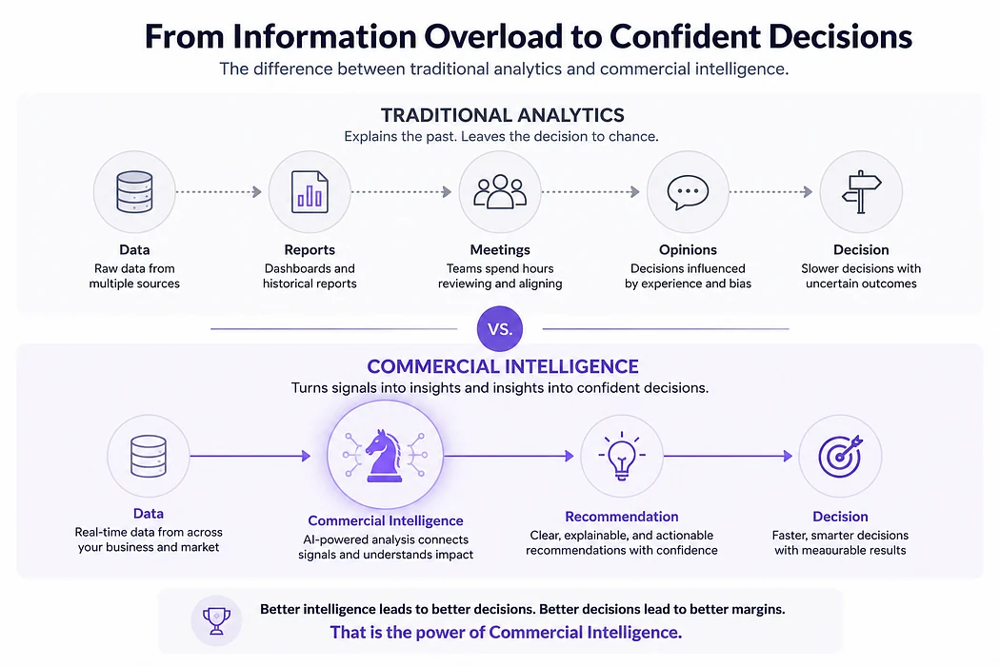

Nermin Sad · CEO & Co-founder
Nermin Sad · CEO & Co-founder
Figure 1. Commercial Intelligence transforms fragmented business signals into confident commercial decisions.
Imagine walking into your office on a Tuesday morning.
A competitor has reduced the price of one of your best-selling products.
Advertising costs have increased overnight.
One product is selling faster than expected.
Another has suddenly stopped converting.
Your dashboard tells you what happened.
Your reports tell you what changed.
But neither tells you what you should do next.
Should you match the competitor’s price? Protect your margin? Wait another day? Increase advertising? Launch a promotion?
The challenge isn’t a lack of data.
It’s the absence of pricing intelligence.
And that single decision may determine the profitability of your entire week.
1. The Data Paradox in E-commerce
E-commerce has become incredibly good at collecting data.
Today, businesses can measure almost everything: sales performance, website traffic, conversion rates, customer acquisition costs, advertising effectiveness, competitor pricing, inventory levels, product reviews, and customer behavior.
Ironically, as businesses have gained access to more information, decision-making has become more difficult.
Teams spend hours switching between dashboards, exporting spreadsheets, comparing reports, and debating what the numbers actually mean.
Data answers what happened.
Leaders still need help answering a far more valuable question:
What should we do next?
Research from McKinsey suggests that while commercial decision-making represents one of retail’s largest opportunities for AI-driven value creation, comparatively little AI investment has been directed toward helping merchants make better commercial decisions.
The opportunity isn’t collecting more information. It’s making better e-commerce pricing decisions.
2. Why Dashboards Don’t Improve Your Pricing Strategy
Traditional analytics platforms are excellent at explaining the past.
They tell us: revenue increased, conversion declined, competitors lowered prices, and inventory is running low.
Those insights matter.
But they stop just before the most important question.
Given everything happening across the business, what is the best e-commerce pricing decision right now?
Modern commerce moves continuously. Customers compare prices across dozens of retailers within seconds. Competitors adjust pricing faster than ever. Advertising costs fluctuate daily. Consumer demand changes without warning.
Static reporting was designed for understanding yesterday. Today’s businesses need pricing intelligence systems that help them respond to today.
3. The Missing Layer in E-commerce Intelligence
Most e-commerce businesses already have the essential technology: commerce platforms, ERP systems, CRM software, marketing automation, and analytics dashboards.
Each performs its role remarkably well.
The challenge is that none of them think across all of them simultaneously.
There is still a gap between information and action.
That gap is where the next generation of competitive advantage in e-commerce pricing strategy will emerge.
Every modern e-commerce business needs one additional layer: a Commercial Intelligence Layer.
One that continuously combines signals from across the business, understands how those signals interact, and transforms them into practical, explainable pricing recommendations.
Not another dashboard. Not another spreadsheet. An intelligence layer.
4. The Pricenaux Framework
The Commercial Intelligence Maturity Model
How modern commerce evolves from collecting data to achieving decision advantage.
Understanding the Framework
The Pricenaux Commercial Intelligence Maturity Model describes the progression most organizations follow as they mature their commercial decision-making capabilities.
Each stage builds on the previous one.
The goal isn’t simply to collect more information.
It’s to improve the quality, speed, and confidence of commercial decisions.

Figure 2. The Pricenaux Commercial Intelligence Maturity Model
Developed by Pricenaux, this framework illustrates how modern organizations evolve from collecting data to achieving Decision Advantage through Commercial Intelligence. It describes the progression from understanding what happened to understanding what should happen next.
Business technology has evolved through four distinct stages.
Stage 1 — Data
Businesses learned how to collect information: orders, products, customers, competitors, inventory, and advertising. Everything became measurable.
Stage 2 — Analytics
Businesses learned how to organize that information. Dashboards, KPIs, reports, and historical trends. Analytics answered one important question: What happened?
Stage 3 — Commercial Intelligence
This is where e-commerce is heading. Instead of simply presenting information, intelligent systems connect pricing, competitor behavior, product performance, customer demand, profitability, and market conditions.
They answer questions like: What deserves attention today? What is driving this recommendation? How confident are we? What happens if we do nothing?
As illustrated in the Pricenaux Commercial Intelligence Maturity Model, Commercial Intelligence transforms information into reasoning.
Stage 4 — Decision Advantage
The ultimate objective isn’t better reporting. It’s better e-commerce pricing decisions: better pricing, smarter launches, faster responses, healthier margins, greater confidence.
Competitive advantage is no longer determined by who owns the most data. It belongs to those who consistently make better commercial decisions.
The practical example below demonstrates how an organization operating at Stage 3 of the Pricenaux Framework approaches decisions differently from one relying solely on traditional analytics.
5. Commercial Intelligence vs. Traditional Analytics
Traditional analytics tells us what happened.
Commercial Intelligence for e-commerce helps explain: why it happened, what is likely to happen next, which actions deserve attention, what risks should be considered, and how confident we should be before acting.
That difference changes everything.
As AI pricing intelligence continues to mature, its greatest value will not come from replacing human judgment. It will come from strengthening it.

Figure 3. Traditional Analytics vs. Commercial Intelligence
Traditional analytics explains what happened. Commercial Intelligence connects business signals, evaluates context, and generates explainable recommendations that enable faster, more confident commercial decisions.
📌 Key Takeaway: Analytics vs. Commercial Intelligence
Traditional Analytics: Explains what happened (e.g., margins dropped, traffic rose) by analyzing past performance in isolation.
Modern e-commerce advantage isn’t built on collecting more data — it’s gained through faster, more confident decision-making.
6. A Practical E-commerce Pricing Strategy Example
Imagine that at 9:15 a.m., one of your competitors lowers the price of a flagship product by 9%.
By 10:00 a.m., your marketing team notices conversion rates beginning to soften.
At 11:30 a.m., someone suggests matching the competitor’s price immediately.
By lunchtime, three different people have three different opinions. One wants to protect market share. Another wants to preserve margin. A third recommends waiting.
None of them has enough context to know which e-commerce pricing decision is actually correct.
An AI pricing intelligence system approaches the situation differently. Instead of reacting automatically, it asks: Is this competitor running a temporary promotion? Have they behaved this way before? How price-sensitive is this product? What happens to profitability if we match today? What happens if we wait? Is another product actually a higher priority?
Sometimes the correct recommendation is to lower the price. Sometimes it isn’t.
The intelligence isn’t found in reacting faster. It’s found in making the better decision.
7. The Hidden Cost of Reactive Pricing Decisions
One pattern we’ve repeatedly observed in conversations with merchants is that pricing decisions are reviewed far less frequently than advertising performance — even though pricing directly determines whether growth is profitable.
One merchant we spoke with during early product discussions believed their e-commerce pricing strategy was performing well because revenue had continued growing month after month.
But when they examined product-level profitability more closely, a different story emerged. Several high-volume products had gradually become less profitable because acquisition costs had increased, competitors had become more aggressive, and pricing decisions were being made too slowly.
Revenue was still growing. Margins were quietly disappearing.
The problem wasn’t one catastrophic pricing mistake. It was hundreds of small pricing decisions compounding over time.
“ Growth can hide weak pricing for a while. Margins eventually tell the truth. “
8. How AI Pricing Intelligence Changes the Equation
Artificial intelligence has made Commercial Intelligence possible at a scale that simply wasn’t practical before.
Modern AI pricing software can continuously evaluate thousands of changing variables across products, competitors, historical performance, market conditions, and customer behavior.
More importantly, AI pricing intelligence enables businesses to move beyond descriptive analytics. Instead of simply reporting yesterday’s performance, intelligent systems can help answer: What is happening now? What is likely to happen next? Which decisions deserve immediate attention? Why does this recommendation make sense?
AI should not replace commercial judgment. It should strengthen it.
The businesses that combine human expertise with explainable AI pricing recommendations will be better positioned to make faster, more confident decisions as markets become increasingly dynamic.
9. The Future of E-commerce Pricing Strategy
Every major evolution in business technology has followed the same pattern.
First, businesses digitized transactions. Then they measured performance. Then they analyzed data.
The next evolution is helping businesses decide.
Over the coming decade, competitive advantage in e-commerce will increasingly come from decision quality, not data quantity.
Most businesses already have enough information. What they need is greater confidence in how they use it.
10. Where Pricenaux Fits
At Pricenaux, this belief shapes everything we build.
We don’t see pricing as an isolated function. Pricing reflects customer demand, competitor behavior, product performance, market dynamics, profitability, and business strategy.
That’s why we’re building more than a dynamic pricing tool.
We’re building a Commercial Intelligence platform that brings together Market Intelligence, Dynamic Pricing, Competitor Price Monitoring, Launch Pricing, and Explainable AI Recommendations into a single decision-support layer for Shopify brands, Amazon sellers, multi-brand retailers, and agencies.
Our goal isn’t to automate every decision. It’s to help businesses make better ones.
Because success isn’t determined by who collects the most data. It’s determined by who turns that data into intelligent action first.
11. Founder Reflection
Building Pricenaux has reinforced one belief above all others.
Businesses rarely struggle because they lack information. Most already have more dashboards, reports, and metrics than they can realistically absorb.
What they lack is confidence.
Confidence that today’s pricing decision is the right one. Confidence that they’re responding to the market — not simply reacting to it. Confidence that growth isn’t quietly coming at the expense of profitability.
I believe the next generation of e-commerce software won’t compete by producing more reports. It will compete by helping businesses make better decisions.
That’s what Commercial Intelligence means to us. And I believe it represents the next chapter of modern commerce.
— Nermin Sad, CEO & Co-founder, Pricenaux
Final Thoughts
The future of e-commerce pricing strategy won’t be won by businesses with the biggest dashboards.
It will be won by businesses with the clearest decisions.
Commercial Intelligence isn’t about replacing experience or intuition. It’s about giving leaders the confidence to act with greater clarity — supported by explainable AI, real-time market intelligence, and a deeper understanding of what truly drives commercial performance.
As markets become faster, more competitive, and increasingly data-rich, the businesses that thrive won’t simply be those with more information.
They’ll be the ones with better intelligence.
And ultimately, they’ll be the ones making better decisions.
Ready to move from pricing data to pricing intelligence? Pricenaux is free to start — no credit card required.
💬 Over to You: How is your team currently handling dynamic market changes — are you relying on manual dashboard checks, or testing dynamic pricing intelligence?
Drop a response below with your biggest pricing challenge or workflow hurdle. I’d love to hear your perspective and discuss how other operators are tackling it!
Have a perspective on this topic?
Continue the discussion with Pricenaux and other operators on LinkedIn.
Join the LinkedIn DiscussionHow mature is your pricing process?
Benchmark your pricing approach, identify decision gaps, and see where stronger guardrails or intelligence could protect margin.